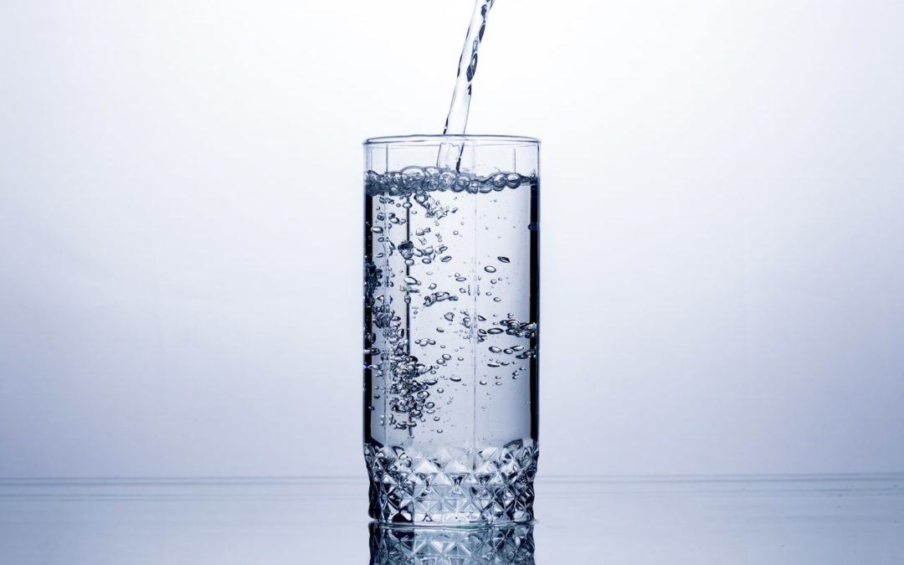

VIDA SAUDÁVEL COM LUÍSA OLIVEIRA

Você toma água?
O funcionamento do organismo é um dos mais privilegiados quando a relação da hidratação com o corpo é colocada em pauta. Manter o corpo hidratado ajuda nas atividades das células, na digestão, no funcionamento dos rins, regulação da pressão arterial, entre outras atividades.
Hidratação na atividade física
Quando o assunto é desidratação, os atletas são considerados um grupo de risco, pois perdem água e peso durante a prática, o que impacta no funcionamento do organismo e no rendimento.
Atletas necessitam produzir mais energia para o esforço dispensado enquanto praticam atividades físicas de alta intensidade. Desta forma, precisam de mais nutrientes para que o metabolismo energético funcione, e manter o corpo hidratado é um dos meios para isso, já que a água é uma “via de transporte” para as fontes de energia.
Como perceber que seu corpo está desidratado?
- Cansaço
- Fome
- Retenção de líquido
- Mau hálito
- Baixo desempenho